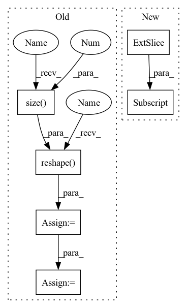

Pattern ID :3261
Before Change
def forward(self, output, target, target_weights):
Forward function.
batch_size = output.size(0 )
num_joints = output.size(1)
if num_joints < self.topk:
raise ValueError(f"topk ({self.topk}) should not "
f"larger than num_joints ({num_joints}).")
heatmaps_pred = output.reshape(
(batch_size, num_joints, -1)) .split(1, 1)
heatmaps_gt = target.reshape((batch_size, num_joints, -1)).split(1, 1)
losses = []
for idx in range(num_joints):
heatmap_pred = heatmaps_pred[idx].squeeze(1)
heatmap_gt = heatmaps_gt[idx].squeeze(1)
if self.use_target_weight:
target_weight = target_weights[:, idx, None]After Change
if self.use_target_weight:
target_weight = target_weights[:, idx, None, None]
losses.append(
self.criterion(output[:, idx] * target_weight,
target[:, idx] * target_weight))
else:
losses.append(self.criterion(output[:, idx], target[:, idx]))In pattern: SUPERPATTERN
Frequency: 3
Non-data size: 6
Instances Fragment ID: 10383310
Project Name: open-mmlab/mmpose
Commit Name: 23954dab675977d9762e61680a0b4a02ee2479f9
Time: 2022-08-02
Author: 87690686+liqikai9@users.noreply.github.com
File Name: mmpose/models/losses/mse_loss.py
M Class Name: KeypointOHKMMSELoss
N Class Name: KeypointOHKMMSELoss
M Method Name: forward(4)
N Method Name: forward(4)
M Parent Class: nn.Module
N Parent Class: nn.Module
M File Name: mmpose/models/losses/mse_loss.py
N File Name: mmpose/models/losses/mse_loss.py
M Start Line: 130
M End Line: 151
N Start Line: 177
N End Line: 209
Before Change
def forward(self, output, target, target_weights):
Forward function.
batch_size = output.size(0 )
num_joints = output.size(1)
if num_joints < self.topk:
raise ValueError(f"topk ({self.topk}) should not "
f"larger than num_joints ({num_joints}).")
heatmaps_pred = output.reshape(
(batch_size, num_joints, -1)) .split(1, 1)
heatmaps_gt = target.reshape((batch_size, num_joints, -1)).split(1, 1)
losses = []
for idx in range(num_joints):
heatmap_pred = heatmaps_pred[idx].squeeze(1)
heatmap_gt = heatmaps_gt[idx].squeeze(1)
if self.use_target_weight:
target_weight = target_weights[:, idx, None]After Change
self.criterion(output[:, idx] * target_weight,
target[:, idx] * target_weight))
else:
losses.append(self.criterion(output[:, idx], target[:, idx] ))
losses = [loss.mean(dim=(1, 2)).unsqueeze(dim=1) for loss in losses]
losses = torch.cat(losses, dim=1) Fragment ID: 10383311
Project Name: open-mmlab/mmpose
Commit Name: 23954dab675977d9762e61680a0b4a02ee2479f9
Time: 2022-08-02
Author: 87690686+liqikai9@users.noreply.github.com
File Name: mmpose/models/losses/mse_loss.py
M Class Name: KeypointOHKMMSELoss
N Class Name: KeypointOHKMMSELoss
M Method Name: forward(4)
N Method Name: forward(4)
M Parent Class: nn.Module
N Parent Class: nn.Module
M File Name: mmpose/models/losses/mse_loss.py
N File Name: mmpose/models/losses/mse_loss.py
M Start Line: 130
M End Line: 151
N Start Line: 177
N End Line: 209
Before Change
if inputs is not None:
// Grouping multiple frames if necessary
if inputs.size(-1) == self.mel_dim:
inputs = inputs.reshape( B, inputs.size(1 ) // self.r, -1)
assert inputs.size(-1) == self.mel_dim * self.r
T_decoder = inputs.size(1)
// Time first (T", B, mel_dim*r)
if inputs is not None:After Change
current_input = initial_input
while True:
if t > 0:
current_input = mel_outputs[-1][:, -1, :] if greedy else inputs[t - 1]
t += self.r
// Prenet Fragment ID: 10383307
Project Name: thuhcsi/tacotron
Commit Name: fea9ec535ec373aad564646f4f292fbee0217c29
Time: 2021-03-18
Author: johnson.tsing@gmail.com
File Name: model/tacotron.py
M Class Name: Decoder
N Class Name: Decoder
M Method Name: forward(4)
N Method Name: forward(4)
M Parent Class: nn.Module
N Parent Class: nn.Module
M File Name: model/tacotron.py
N File Name: model/tacotron.py
M Start Line: 87
M End Line: 187
N Start Line: 88
N End Line: 180
Before Change
if inputs is not None:
// Grouping multiple frames if necessary
if inputs.size(-1) == self.mel_dim:
inputs = inputs.reshape( B, inputs.size(1 ) // self.r, -1)
assert inputs.size(-1) == self.mel_dim * self.r
T_decoder = inputs.size(1)
// Time first (T", B, mel_dim*r)
if inputs is not None:After Change
current_input = initial_input
while True:
if t > 0:
current_input = mel_outputs[-1][:, -1, :] if greedy else inputs[t - 1]
t += self.r
// Prenet Fragment ID: 10383305
Project Name: thuhcsi/tacotron
Commit Name: fea9ec535ec373aad564646f4f292fbee0217c29
Time: 2021-03-18
Author: johnson.tsing@gmail.com
File Name: model/tacotron2.py
M Class Name: Decoder
N Class Name: Decoder
M Method Name: forward(4)
N Method Name: forward(4)
M Parent Class: nn.Module
N Parent Class: nn.Module
M File Name: model/tacotron2.py
N File Name: model/tacotron2.py
M Start Line: 127
M End Line: 224
N Start Line: 127
N End Line: 216